Official LIKELION at SKU
기획 & 디자인

Official LIKELION at SKU
12주차 기획시간!
바이브 코딩
코드 대신 문서로, 화면까지 만들기
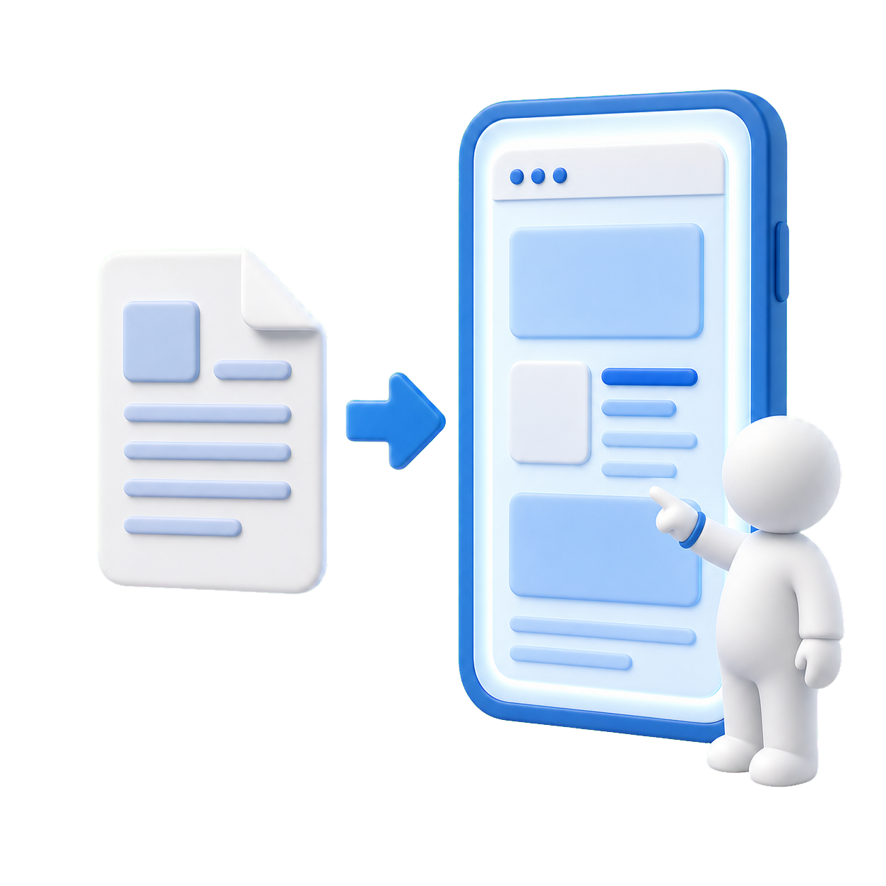
Official LIKELION at SKU
오늘 배우게 될 것
맥락과 기준을 문서로 넘기고
그 결과를 사람이 검증해야 합니다
AI Agent 이해하기
요약이 아니라 일을 시키는 도구 — LLM과 Agent의 차이
기획 문서 만들기
prd.md·design.md에 무엇을·왜 / 어떻게 보이게를 정리
실습
교수님이 보면 한숨, 학생들은 박수칠 서비스 만들기
검증과 기획자의 역할
결과를 사람이 검증하고, 기준을 Agent에게 넘긴다
Official LIKELION at SKU
PART 1 / 4
AI Agent 이해하기
요약이 아니라 일을 시키는 도구로 — LLM과 Agent의 차이부터
Official LIKELION at SKU
PART 1 · AI Agent 이해하기
오늘의 시작 질문
AI에게 요약 말고 일을 시켜본 적 있나요?
Official LIKELION at SKU
PART 1 · AI Agent 이해하기
LLM은 답변, Agent는 행동
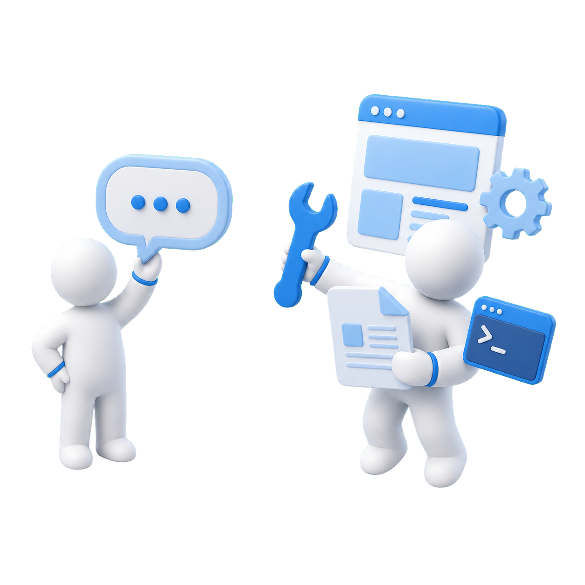
Official LIKELION at SKU
PART 1 · AI Agent 이해하기
답변형과 작업형, 다섯 가지 차이점
| 구분 | LLM (답변형) | Agent (작업형) |
|---|---|---|
| 하는 일 | 질문에 글로 답한다 | 직접 파일·코드로 일한다 |
| 내가 주는 것 | 질문·지시 | 목표·문서·파일·권한 |
| 결과물 | 텍스트(설명·초안) | 만들어진 파일·화면·실행 결과 |
| 진행 방식 | 한 번 답하고 끝 | 해보고 고치기를 반복 |
| 내가 할 일 | 질문을 잘 하기 | 기준·문서를 잘 넘기기 |
Official LIKELION at SKU
PART 1 · AI Agent 이해하기
바이브 코딩, 실무에선 에이전틱 코딩
방금 본 이 방식, 요즘 흔히 바이브 코딩이라 부릅니다. 2025년 초에 퍼진 말입니다.
실무 문서를 열어보면 같은 걸 에이전틱 코딩(agentic coding)이라 부릅니다. 이름은 편한 쪽으로 쓰면 됩니다.
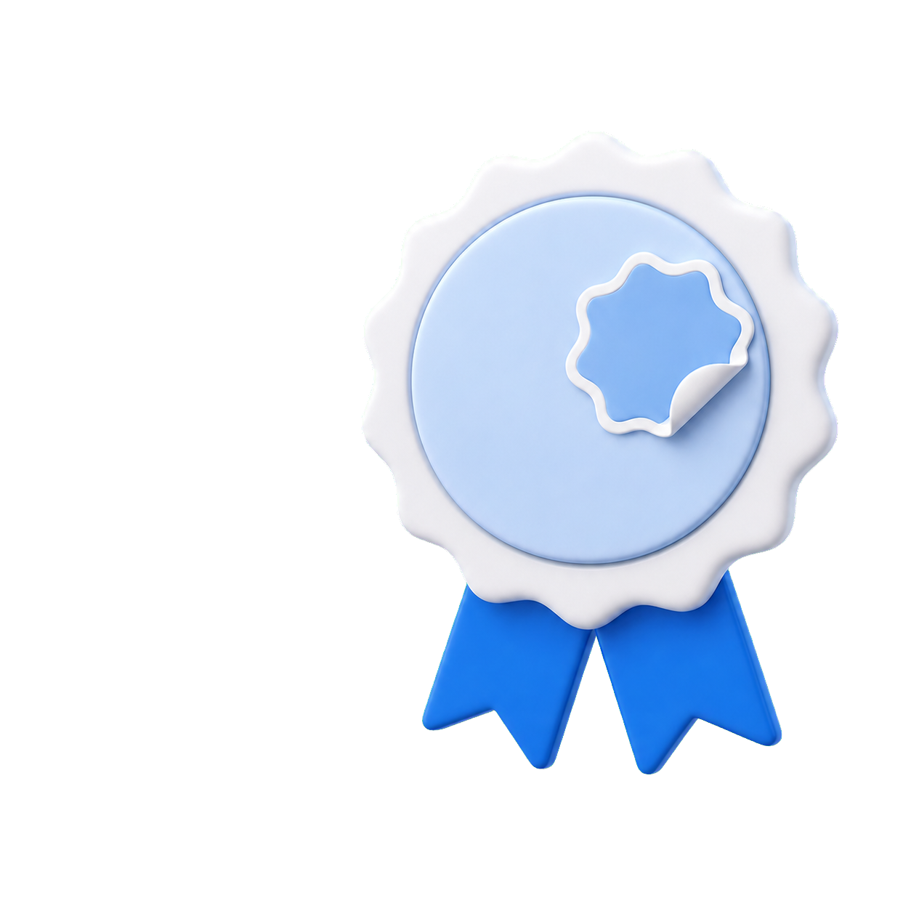
Official LIKELION at SKU
PART 1 · AI Agent 이해하기
좋은 요청의 5가지 조건
AI가 제멋대로 추측하지 않게, 요청에 이 다섯을 함께 담으세요.
Official LIKELION at SKU
PART 1 · AI Agent 이해하기
어떻게 하라보다 뭐가 좋은 결과인지를 먼저
AI에게 순서를 길게 불러 주지 마세요. "어떤 결과면 성공인지"를 먼저 정해서 건네면 됩니다. 요즘 AI는 과정을 잘게 시킬수록 오히려 헤맵니다. 프롬프트는 길다고 좋은 게 아닙니다.
대학생용 프론트 프로토타입을 만들고 있어. prd.md와 design.md를 읽고, 그 기준에 맞춰 mock data 화면을 만들어줘. 로그인·DB·실제 API·배포는 만들지 마. 끝나면 반영한 요구사항을 요약해줘.
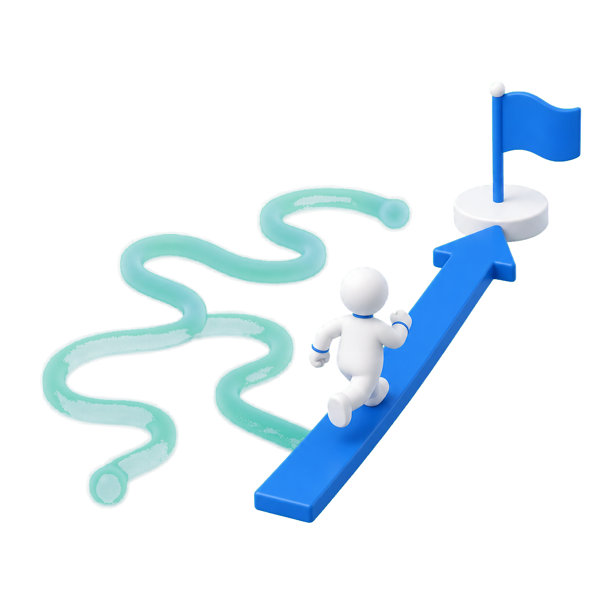
Official LIKELION at SKU
PART 1 · AI Agent 이해하기
에이전트는 말이 아니라 행동한다 — 그래서 조심
LLM이 틀리면 틀린 답에서 끝나지만, Agent가 틀리면 틀린 행동을 합니다. 멀쩡한 파일을 지우고, 엉뚱한 명령을 실행하죠.
Official LIKELION at SKU
PART 1 · AI Agent 이해하기
같은 AI, 다른 결과 — 차이는 문서
말 안 한 부분은 AI가 제멋대로 추측합니다.
돌릴 때마다 결과가 들쭉날쭉, 화면도 기능도 매번 달라집니다.
어디가 틀렸는지 짚기도 어렵습니다.
문제·화면·기준이 미리 정해져 있습니다.
결과가 일관됩니다. 다시 돌려도 비슷하게 나오죠.
문서와 대조해 검증하기 쉽습니다.
Official LIKELION at SKU
PART 2 / 4
Agent에게 넘길 기획 문서 만들기
prd.md와 design.md — 무엇을·왜 / 어떻게 보이게
Official LIKELION at SKU
PART 2 · 기획 문서 만들기
문서의 두 종류
쉽게 말하면, prd.md에는 무엇을·왜 만드는지, design.md에는 어떻게 보이는지를 적습니다. 그래서 이 둘을 따로 씁니다.
Official LIKELION at SKU
PART 2 · 기획 문서 만들기
PRD는 그동안 배운 것들로 구성
무엇을·왜 만들지 정리하는 문서 — 이 10칸이 그동안 배운 개념과 그대로 이어집니다. prd.md에 1→10 순서로 채우면 돼요. (칸 아래 ↔ = 지난 주차 개념)
Official LIKELION at SKU
PART 2 · 기획 문서 만들기
Design이 정하는
어떻게 보일지
Agent가 화면을 일관되게 만들도록 시각·문구 기준을 정리하는 문서입니다. 이 기준을 design.md에 적어 넘깁니다.
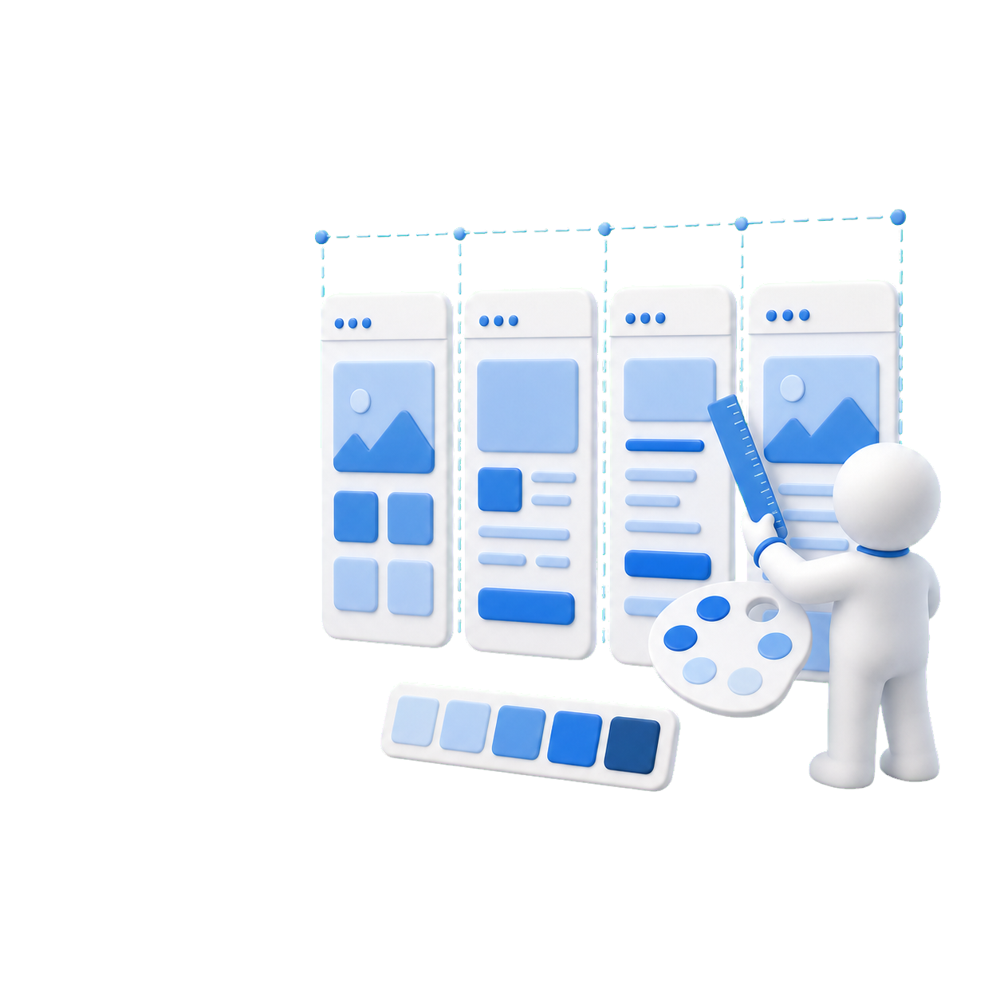
Official LIKELION at SKU
PART 2 · 기획 문서 만들기
파일마다 다르게 읽히는 방식
AGENTS.md = 에이전트가 지킬 규칙을 적어두는 파일. 여기에 "먼저 prd·design을 읽어라"를 한 번 넣어두면, 매번 안 시켜도 알아서 읽습니다. (CLAUDE.md·.cursor/rules도 같은 역할 — Cursor에서 쓰는 규칙 파일입니다)
폴더에 있어도 "읽어줘" 안 하면 그냥 지나쳐요. 그래서 매번 프롬프트에 "prd.md·design.md 먼저 읽고"라고 콕 집어야 합니다.
Official LIKELION at SKU
PART 2 · 기획 문서 만들기
결과물 파일, 각자 다른 역할
| 파일 | 초급자용 역할 | 비유 |
|---|---|---|
| HTML | 화면의 뼈대 — 무엇이 있는지 | 건물 골조 |
| CSS | 스타일·분위기 — 어떻게 보이는지 | 페인트·마감 |
| JavaScript | 버튼 클릭·화면 전환 같은 동작 | 전기·스위치 |
| Markdown(.md) | 사람이 읽는 문서(prd.md·design.md) | 설명서 |
오늘 직접 코딩하는 시간은 아니에요 — 코딩 에이전트가 만든 결과에서 어떤 파일이 뭘 하는지만 구분하면 충분합니다.
Official LIKELION at SKU
PART 3 / 4
실습
교수님이 보면 한숨, 학생들은 박수칠 서비스
Official LIKELION at SKU
PART 3 · 실습
교수님이 보면 한숨,
학생들은 박수칠 서비스!
※ 도구 설치, 설마 안 하고 오셨나요? 로그인·세팅은 지금 같이 — 화면이 멈췄다면 손을 번쩍, 구조하러 갈게요.
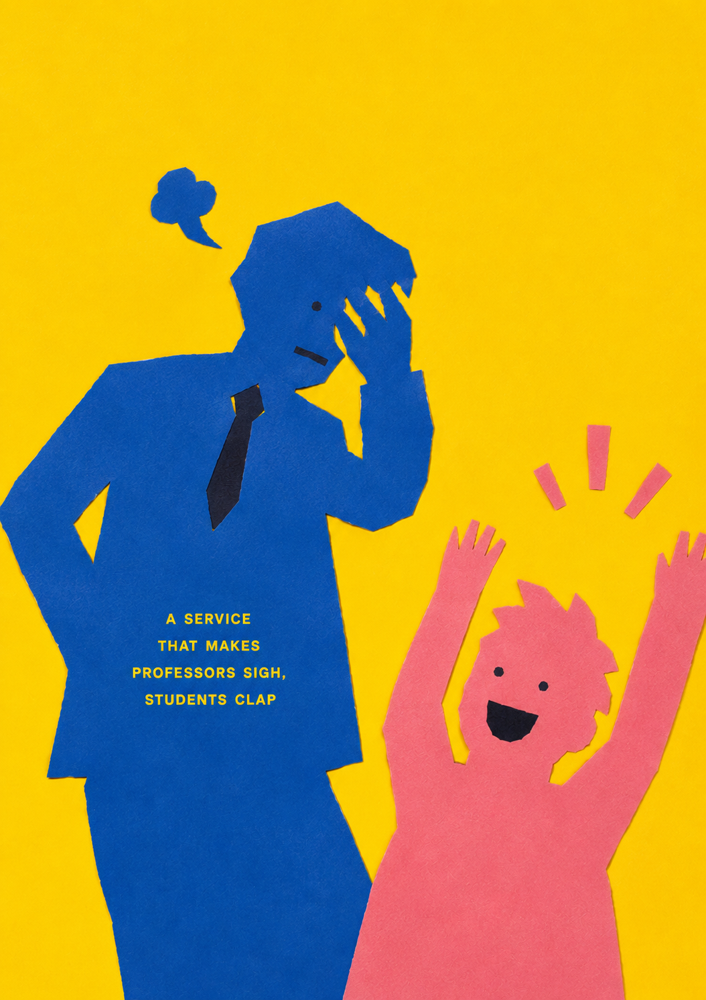
Official LIKELION at SKU
PART 3 · 실습
오늘 만드는 건 완성 앱이 아니라 작동하는 견본
프로토타입은 영화 세트장 같은 겁니다. 겉은 진짜 거리인데, 문을 열면 뒤가 뻥 뚫려 있죠. 화면과 흐름만 진짜고, 속은 아직 비었습니다.
Mock Data는 손으로 적어둔 가짜 예시입니다. 진짜 맛집 목록 대신 예시 세 개, 서버가 줄 실제 데이터를 흉내 낸 겁니다.
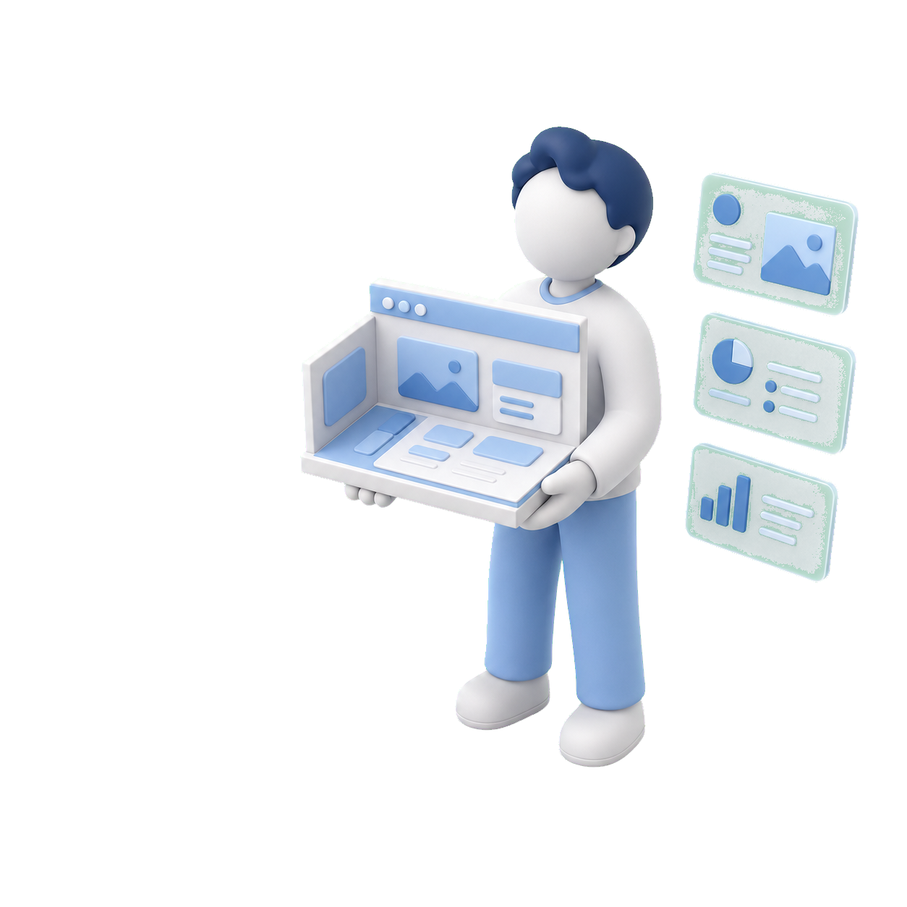
Official LIKELION at SKU
PART 3 · 실습
작성 15분① 먼저 쓰는 prd.md
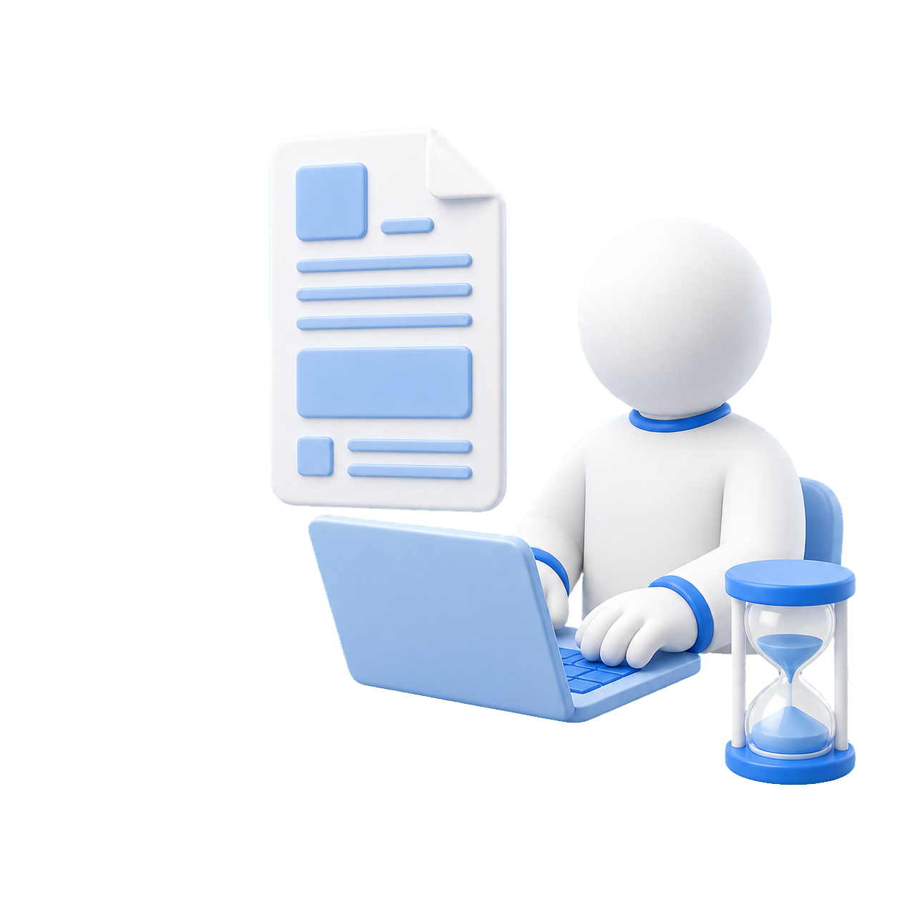
Official LIKELION at SKU
PART 3 · 실습
작성 10분② 이어서 쓰는 design.md
Official LIKELION at SKU
PART 3 · 실습
③ 코딩 에이전트에 넘길 때 빼먹지 말 5가지
문서 지목
"prd.md·design.md를 먼저 읽고 그 기준대로 만들어줘."
빼먹으면 문서를 무시하고 제멋대로 만든다
제약 못박기
"로그인·DB·실제 API·결제·배포 빼고 mock data만."
빼먹으면 요청 안 한 기능을 만든다(scope creep)
작업 요약 요청
"무슨 파일을 만들고 PRD·design의 뭘 반영했는지 정리해줘."
빼먹으면 뭘 했는지 몰라 검증을 못 한다
범위·환각 방지
"PRD에 없는 기능은 추가 말고, 애매하면 먼저 물어봐."
빼먹으면 없는 기능·API를 지어낸다
확인 방법 요청
"결과를 브라우저에서 어떻게 여는지 알려줘."
빼먹으면 결과를 볼 방법을 몰라 막힌다
Official LIKELION at SKU
PART 4 / 4
검증과 기획자의 역할
돌아가는 화면 ≠ 좋은 결과물 — 검증 습관과 기획자의 자리
Official LIKELION at SKU
PART 4 · 검증과 기획자의 역할
"AI가 만들었으니 맞겠지"라는 가장 위험한 착각
에러 없이 실행되는가실행
IA의 화면들이 만들어졌나화면 구조
User Flow가 클릭으로 이어지나흐름
기본 상태가 화면에 보이나상태
PRD의 문제·사용자·기능이 반영됐나PRD 대조
design의 레이아웃·컴포넌트를 지켰나Design 대조
DB·로그인·API·결제·배포가 안 들어갔나제외 범위
없는 API·라이브러리를 지어내지 않았나환각
PRD에 없는 기능을 임의로 넣지 않았나범위 준수
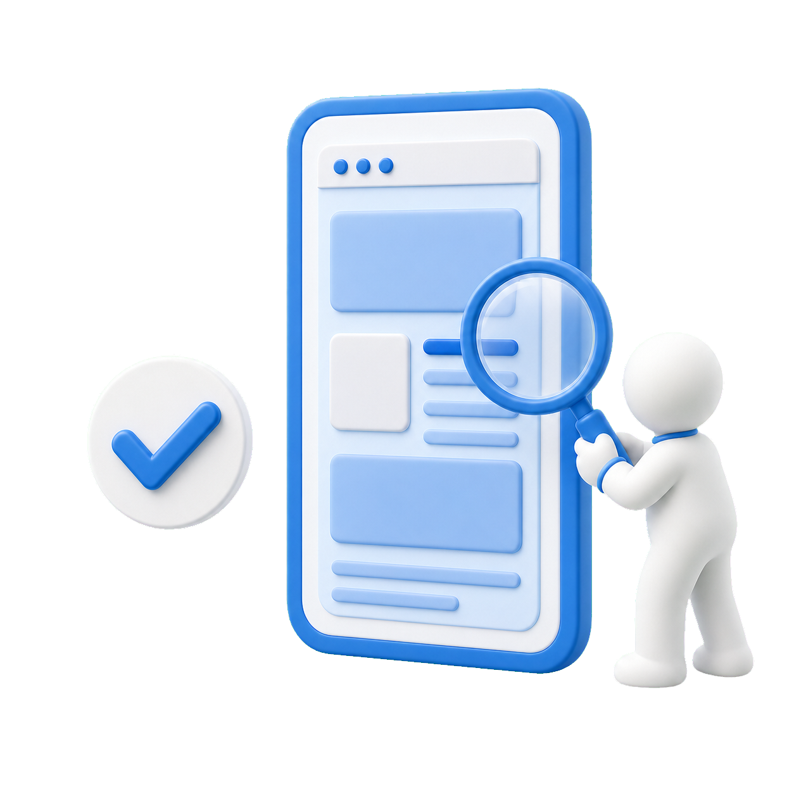
Official LIKELION at SKU
PART 4 · 검증과 기획자의 역할
돌아가는 화면 ≠ 좋은 결과물
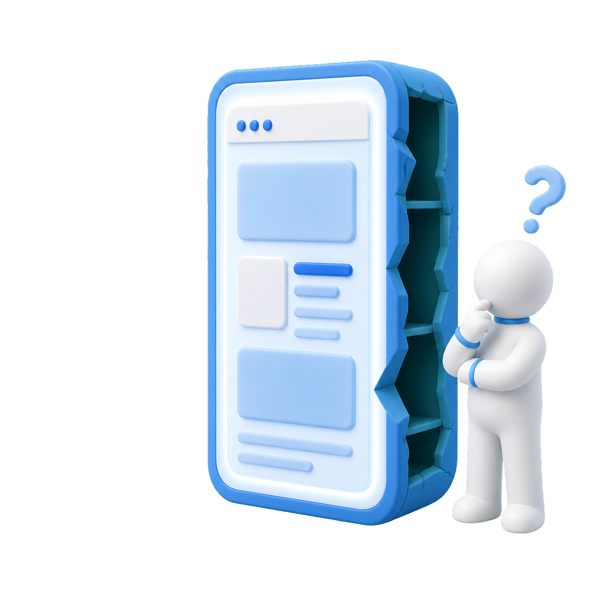
Official LIKELION at SKU
PART 4 · 검증과 기획자의 역할
AI 시대의 기획자
기획자가 넘기는 문제·구조·기준·검증
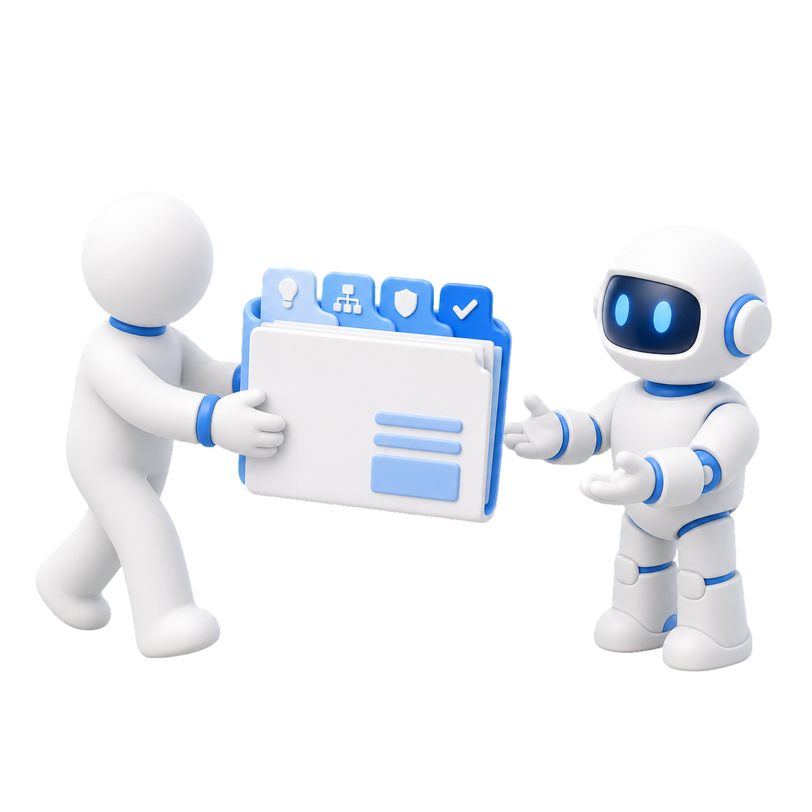
Official LIKELION at SKU
세션 요약
좋은 결과는 좋은 요청에서 시작
좋은 요청은 문제·사용자·구조·기준·제외 범위를 담고, 그 결과는 사람이 검증합니다.
좋은 요청
맥락·목표·기준·제약·출력 — 결과를 먼저 적는다
문서로 넘기기
prd.md(무엇을·왜)와 design.md(어떻게 보이게)
사람이 검증
실행·흐름·PRD/Design 대조·환각·범위를 직접 확인
기획자 역할
문제·구조·기준·검증을 Agent에게 넘긴다
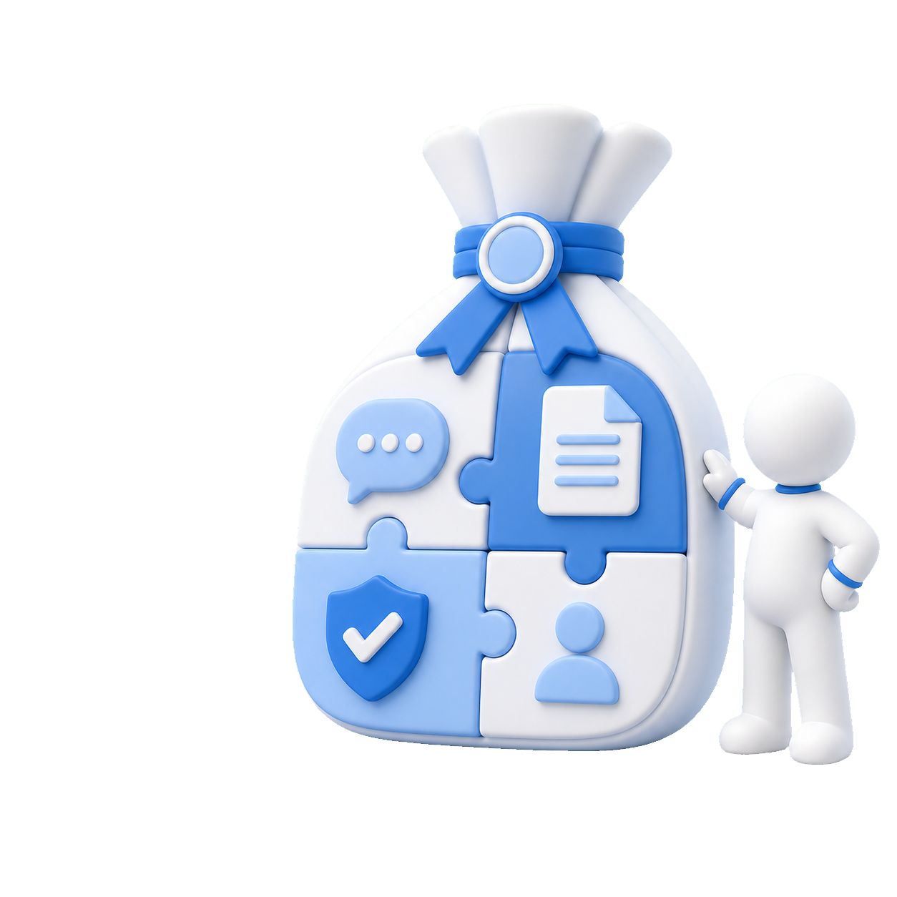